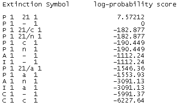

To return to the main ExtSym page click here. Last modified 24th November 2008.
Summary: This page describes the output returned by the ExtSym program, that is the file table.asc.
This web page is structured as follows:
ExtSym is designed to help crystallographers determining the extinction symbol of a crystalline powder sample from powder diffraction data. Before using ExtSym it is assumed that the crystallographer has successfully indexed the unit cell and therefore knows the crystal system that the crystalline powder belongs to.
ExtSym outputs a ranked list of the extinction symbols belonging to a crystal system; measured in terms of the logarithm of the probability of the extinction symbol in question (Egr) divided by the probability of the extinction symbol that symbolize no systematic absences (E---):
For example, for the monoclinic crystal system with unique axis b we have E--- = 'P 1 - 1' (see the International Tables for Crystallography [1]). An example ExtSym output for a monoclinic crystal system with unique axis b is shown below:

Figure 1: Shows the content of a table.asc file returned by ExtSym.
The 1st column lists the monoclinic extinction symbols as defined in the International Tables for Crystallography [1] and the 2nd column shows the log probability of each symbol as defined in Eq. 1. A positive log probability means the corresponding extinction symbol is more probable than P - - - and vice versa for negative log probabilities. Notice that for the output in Fig. 1 it just happens that only one extinction symbol is more probable than P 1 - 1.
Note that prior to July 2007 the output returned by ExtSym used the slightly more verbose form:
Examples of ExtSym outputs (including the one above) can be downloaded by clicking any entry in the "Best ExS" column in any of the tables displayed on the ExtSym result page.
For further discussions of the ExtSym output see Ref. [2-3].